ԲՆՈՒԹԱԳԻՐ
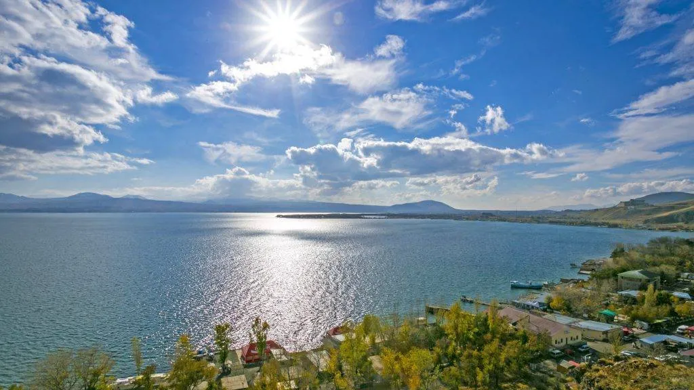
ՏՎՅԱԼՆԵՐ
Ուղղություն
Արևմուտքից
Հարավ-արևմուտքից
Հարավից
Հյուսիսից
Արևելքից
Սահմանակից մարզ
Կոտայք
Արարատ
-
Վայոց Ձոր, Լոռի, Տավուշ
-
Հարևան երկրներ
-
-
-
-
Ադրբեջան
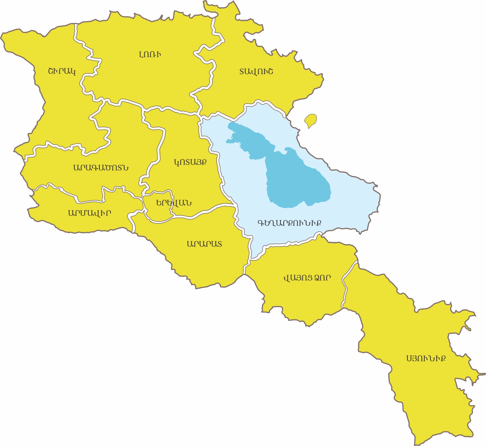
Հիմնադրումը
Գեղարքունիքի մարզը ձևավորվել է 1995 թ. ապրիլի 12-ին։
Տարածքը
Հանրապետության ամենամեծ մարզն է՝ զբաղեցնելով երկրի տարածքի 18% -ը (5 348 կմ²):
Վարչական կենտրոնը
Գավառ քաղաք: Գտնվում է Երևանից 98կմ դեպի արևելք: Հիմնադրվել է ուրարտական թագավոր Ռուսա Ա-ի կողմից (մ.թ.ա. 735-713թթ.), ըստ «Դարի գլուխ» հնավայրից գտնված մ.թ.ա. 732թ. սեպագիր արձանագրության:
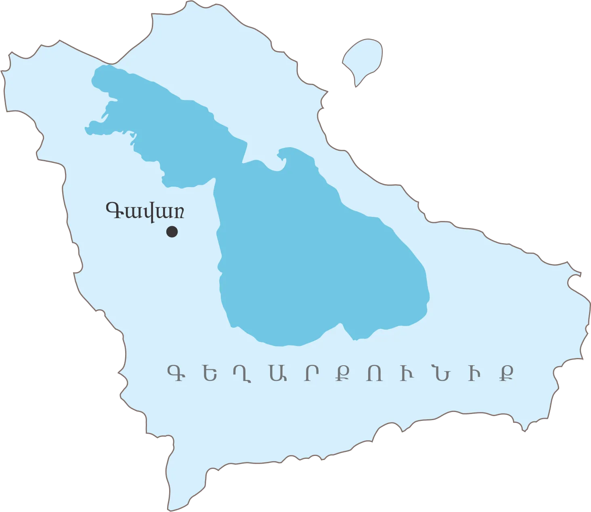
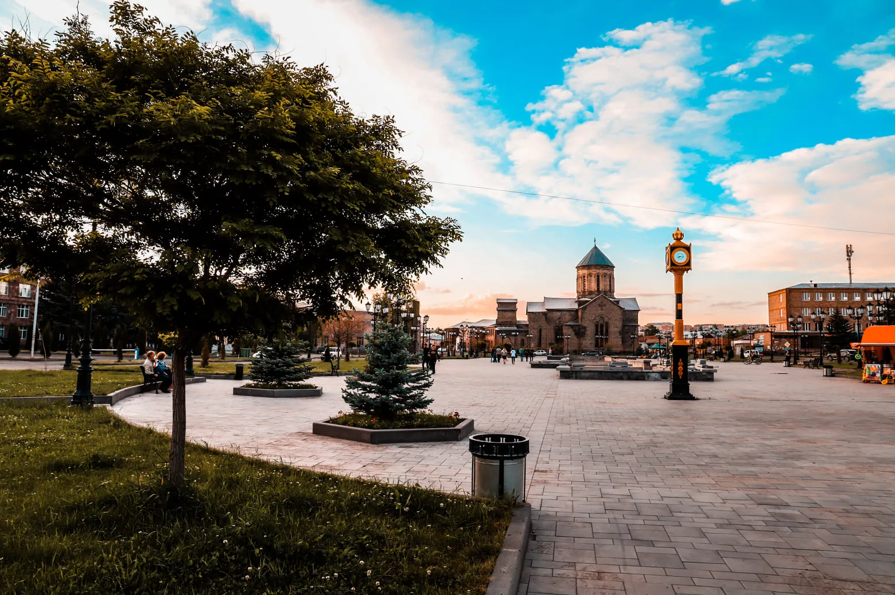
Ցուցիչ
Տարածք
Կոորդինատներ
Բարձրություն
Ամենաբարձր գագաթ
Վարչական կենտրոն
Տարածաշրջաններ
Քաղաքներ
Գյուղեր
Բնակչություն
Հեռավորություն Երևանից
Փոստային դասիչ
Թեժ գիծ
Վեբ կայք
Տվյալ
5,348 քառ. կմ (18%)
45°12′ ավ. ե.
1,325 – 3,597 մ
Աժդահակ լեռ (3,598 մ)
Գավառ
Գավառ, Ճամբարակ, Մարտունի, Սևան, Վարդենիս
Գավառ, Ճամբարակ, Մարտունի, Սևան, Վարդենիս
87
231,800 (2016 թ.)
73 կմ
1201–1626
(+374 60) 650 612
gegharkunik.mtad.am
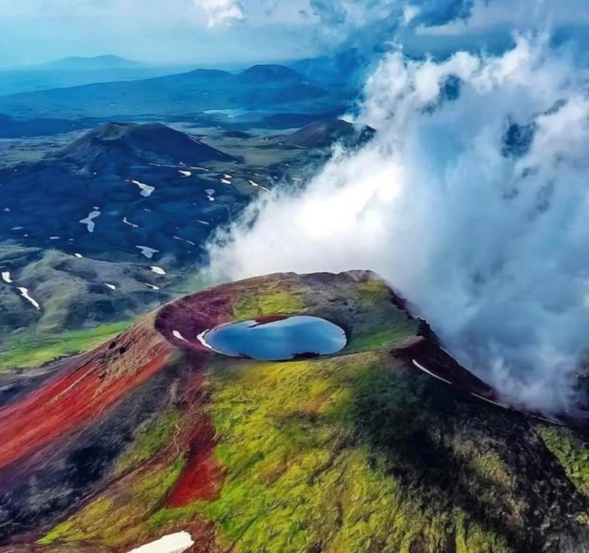
Ամենաբարձր գագաթ Աժդահակ լեռ (3,598 մ)
Մարզային հեռախոսային կոդեր
Բնակավայր
Գավառ
Սևան
Մարտունի
Մարտունի CDMA
Սարուխան
Ճամբարակ
Վարդենիկ
Վահան
Վարդենիս
Կոդ
264
261
262
262
264
265
265 5
265 96
269
Մարզպետարան/Կապ
Հասցե․ ք. Գավառ, Գրիգոր Լուսավորչի 36
Վեբ․ http://armavir.mtad.am/
Էլ․ հասցե․ gegharkunik.qartughar@mta.gov.am
Հեռ./ֆաքս․ (0264) 2-10-45
Թեժ գիծ (+374 60) 650 612
-
-
-
-

ԻՆՉՊԵՍ ՀԱՍՆԵԼ

Ավտոմայրուղիներ
- Գեղարքունիքի տարածքով անցնում են հանրապետական նշանակության հիմնական ավտոմայրուղիները՝
- Մ-4, Մ-10, Մ-14
- Երևան – Սևան – Դիլիջան հանրապետական մայրուղի
- Սելիմի լեռնանցքով անցնող Հարավ-հյուսիս մայրուղի
Մարզը կապված է Հայաստանի այլ շրջանների հետ՝ մայրուղիների միջոցով
Ճանապարհները հիմնականում բարվոք վիճակում են
Երթուղային տաքսի և ավտոբուս
- Երևանից Հյուսիսային ավտոկայանից Գավառ երթուղային տաքսիներով ուղևորությունը տևում է 2 ժամ, արժեքը՝ 1100 դրամ
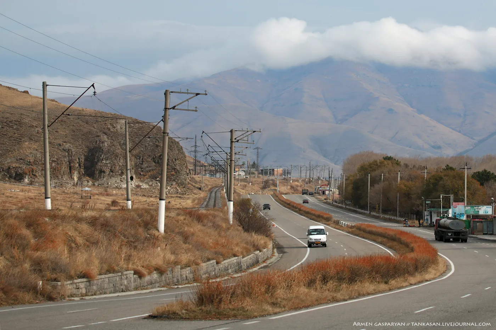
Երկաթուղի
- Սևան-Շորժա-Վարդենիս երթուղով գործում են երկու գնացք՝ բեռնափոխադրումների համար, ամռանը նաև ուղևորափոխադրումներ
- Սևան ուղիղ հասանելի է Երևանի «Ալմաստ» երկաթուղային կայարանից
- Սևանում կա քաղաքը Երևանին կապող երկաթուղային կայարան
- Ուղևորությունը տևում է 1 ժ 25 րոպե
- Մերձքաղաքային սեզոնային էլեկտրագնացքը գործում է ուրբաթ, շաբաթ և կիրակի օրերին
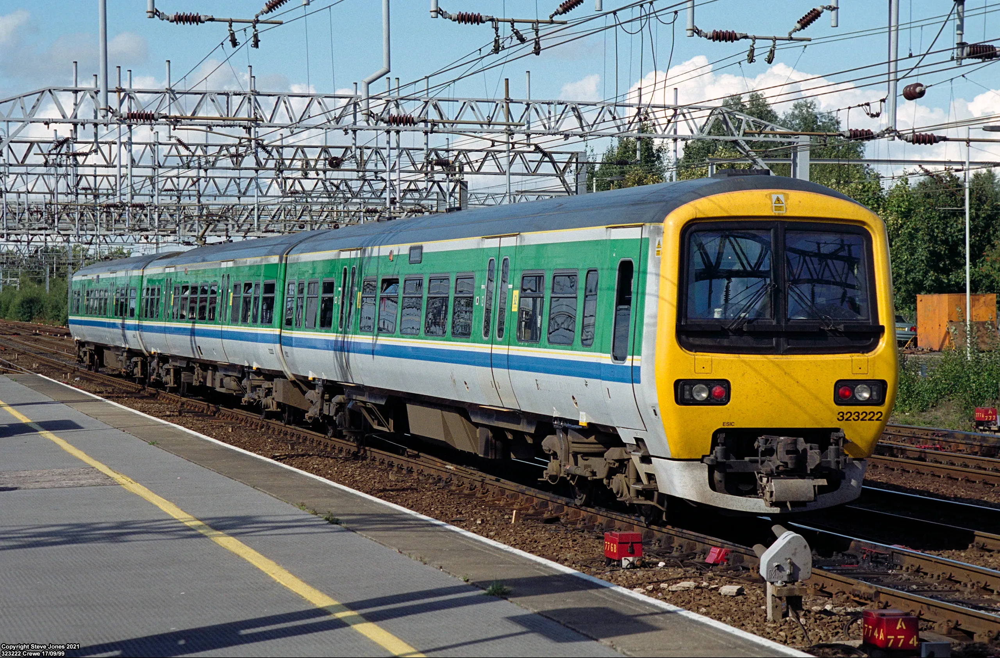
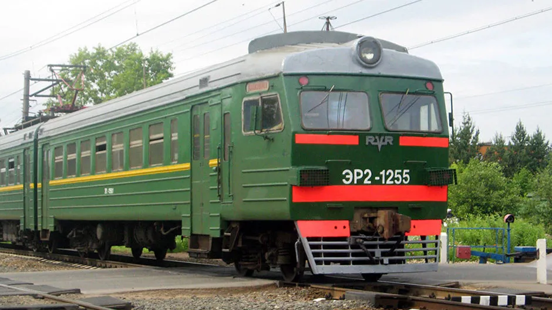
Էլեկտրագնացքի ժամանակացույց
- Երևան «Ալմաստ» կայարանից մեկնում է 08:30, Սևան ժամանում 10:28, Շորժա՝ 11:28
- Հակառակ ուղղությամբ Շորժա մեկնում է 17:00, Սևան՝ 18:00, Երևան՝ 20:00
-
Տոմսի արժեքը՝ մեկ ուղղությամբ
- մինչև Սևան՝ 600 դրամ
- մինչև Շորժա՝ 1,000 դրամ
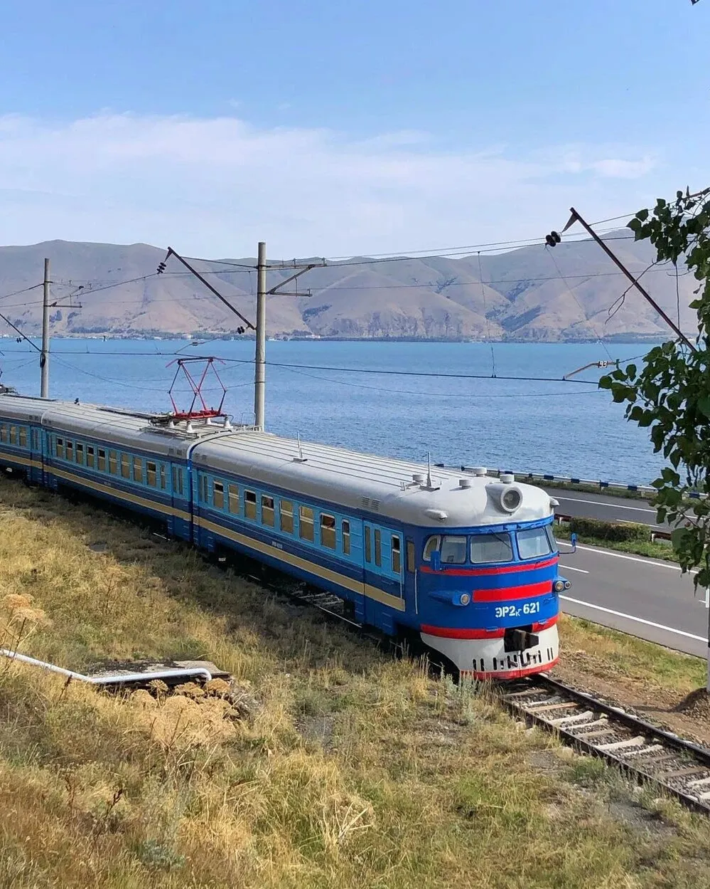
ԿԼԻՄԱ
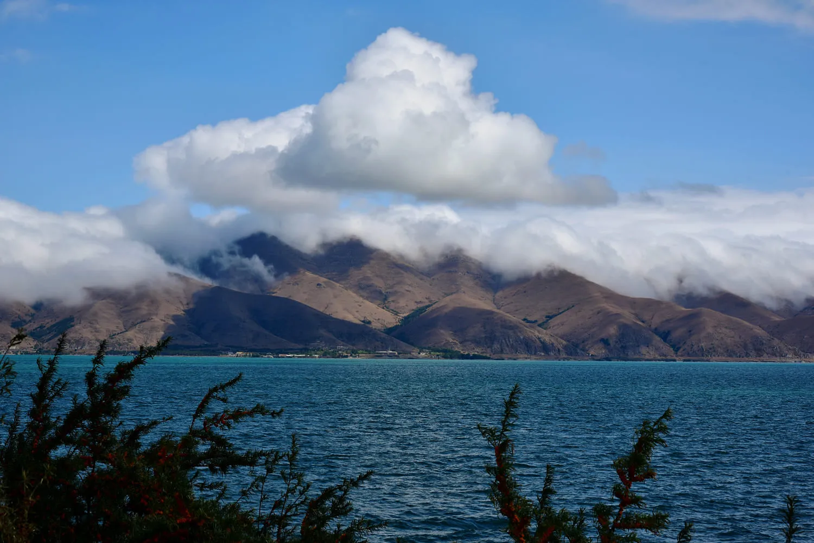
Կլիմայի առանձնահատկություններ
- Գեղարքունիքի մարզը հիմնականում գտնվում է ծովի մակերևույթից 2,000–3,500 մ բարձրության վրա։
- Մարզի տարածքին բնորոշ են մշտական զով զեփյուռները
- Զածրադիր վայրերում՝ բարեխառն լեռնային կլիմա
- Ափամերձ շրջաններում կլիման ավելի մեղմ է, լեռնանցքներում՝ խիստ։
Եղանակների բնութագիր
Ձմեռ - բնորոշ են երկարատև, ցրտաշունչ, քամոտ ձմեռներ, կայուն ձնածածկույթով (75 -ից մինչև 140–160 օր), հաճախ ուղեկցվում է բուքերով։
Ամառ - զով, միջին ջերմաստիճան (+16…+20°C), երբեմն արևոտ ու չոր, հազվադեպ՝ շոգ օրերով։
Գարուն – խոնավ, տեղումնառատ, հաճախ ամպրոպներով ու կարկուտով։
Աշուն – սկզբում մեղմ ու արևոտ, ապա՝ սառնաշունչ ու մառախուղներով։
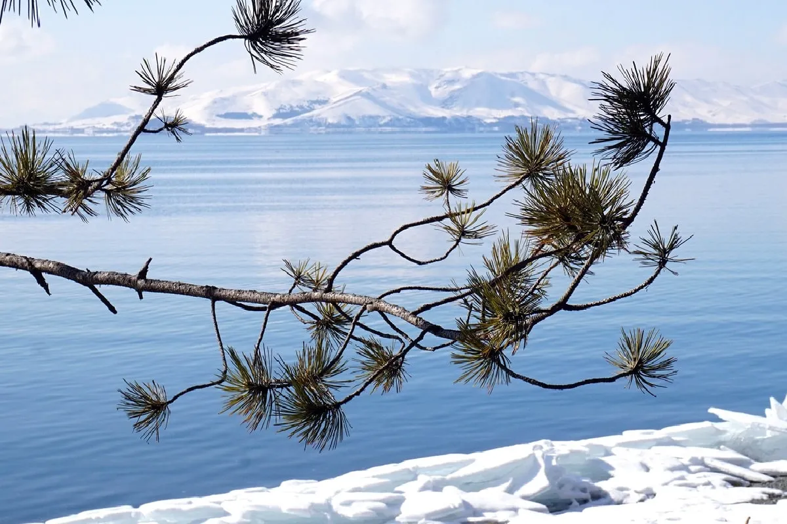
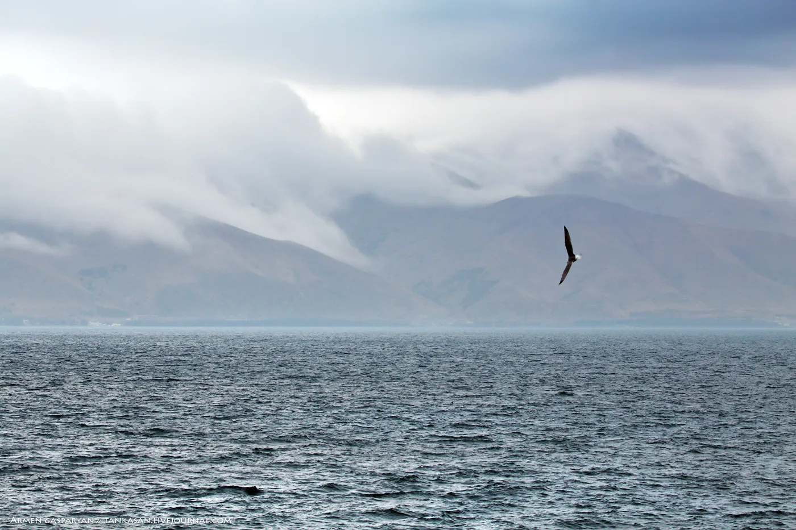
Ջերմաստիճան
- Միջին տարեկան ջերմաստիճան՝+5–ից -6°CC
- Ամռանը՝ +16°C – +20°C
- Ձմռանը՝ -5°C – -12°C
- Ափամերձ շրջաններում +4…+6°C
- Լեռնայինում՝ մոտ +5°C
- Հունվար՝−5…−12°C, լեռնանցքներում՝ ցածր
- Հուլիս–օգոստոս՝ +15…+20°C, լեռնային գոտիներում՝ +14…+15°C
- Բացարձակ առավելագույն՝ +33…+34°C (առափնյա շրջաններ)
- Բացարձակ նվազագույն՝−33…−38°C (լեռնային գոտի)
Տեղումներ
- Տեղումների տարեկան միջին քանակը՝ 440 – 650 մմ, բարձրադիր շրջաններում՝ մինչև 1000 մմ
- Առավելագույնը՝ հյուսիսային և արևմտյան շրջաններում(մինչև 647 մմ)
- Նվազագույնը՝ հարավային ափում (414–467 մմ)
- Ձմռանը գոյանում է կայուն ձնածածկույթ՝ 75 – 160 օր
- Ձնածածկույթի առավելագույն տասնօրյակային բարձրությունը՝37 սմ – 75 սմ (լեռնանցքներում)
- Հողի սառչելու առավելագույն խորությունը՝ 108 սմ
- Օդի հարաբերական խոնավության միջին տարեկան ցուցանիշ՝ 70%
Քամիներ
- Քամու միջին տարեկան արագությունը առափնյա շրջաններում (Գավառ) ՝ 1.8 – 2.6 մ/վ
- Քամու միջին տարեկան արագությունը Սևանա կղզում՝ մինչև 4մ/վ:
- Մասրիկի հովտում՝ ամռանը մինչև 5 մ/վ
Մթնոլորտային երևույթներ
- Ամպրոպներ՝ տարեկան 50–60 օր, հաճախ կարկուտով (մինչև 6 օր)
- Մառախուղ՝ Սեմյոնովկայում մինչև 105 օր, հարավում՝ հազվադեպ (3–5 օր)
- Ձմռանը հաճախ դիտվում են բուքեր (մինչև 26–27 օր)
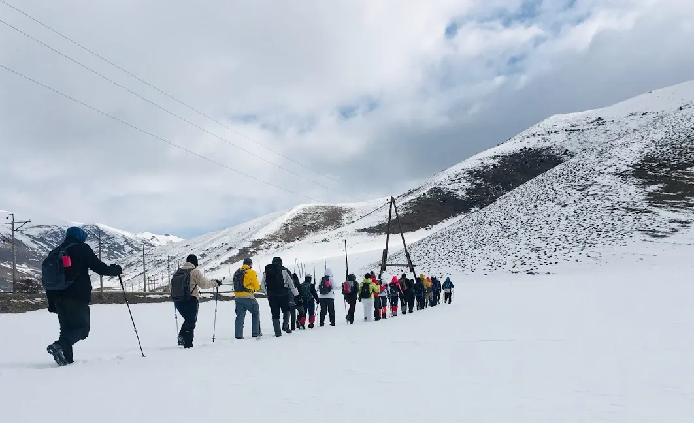
Արևափայլ
- Միջին տարեկան տևողություն՝ ավելի քան 2,700 – 2,800 ժամ/տարի
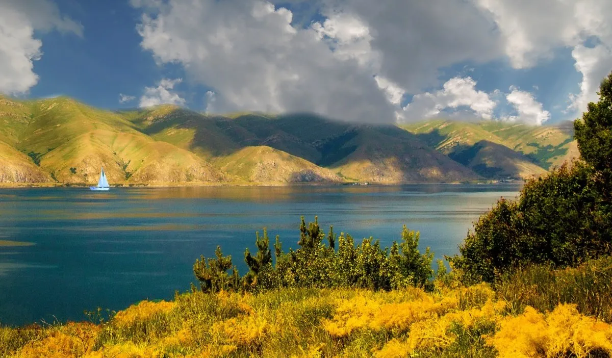